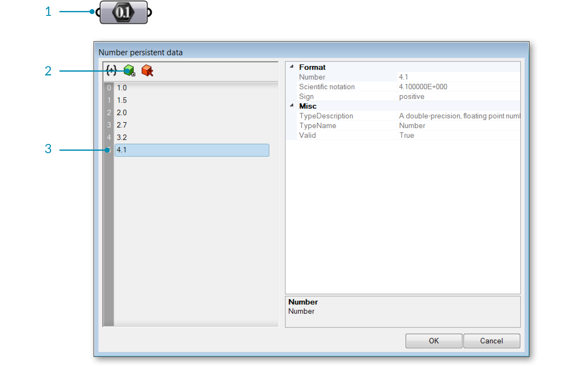

1.4.4. Creating Lists
Example files that accompany this section: http://grasshopperprimer.com/appendix/A-2/1_gh-files.html
There are many different ways to generate lists in Grasshopper. Below, we’ll look at a few different methods for generating lists and then look at how the data can be used to convey information in the viewport via a visualization.
1.4.4.1. MANUAL LIST CREATION
Perhaps the easiest way to create a list (and one of the most over-looked methods) is to manually type in a list of values into a parameter. Using this method puts added responsibility on the user because this method relies on direct user input (ie. persistent data) for the list creation. In order to change the list values, the user has to manually type in each individual valuewhich can be difficult if the list has many entries. There are several ways to manually create a list. One way is to use a Number paramter. Right click the Number parameter and select “Manage Number Collection.”

- Right click the number component to open the Number collection Manager.
- Click the Add Item icon to add a number to the list.
- Double click the number to change its value.
Another method is to manually enter the list items into a panel. Make sure that “Multiline Data” is deselected.

1.4.4.2. RANGE
The Range component, found under Sets/Sequence/Range, creates a list of evenly spaced numbers between a low and a high value called the Domain. A domain (also sometimes referred to as an interval) is every possible number between two numeric extremes.
A Range component divides a numeric domain into even segments and returns a list of values.

- Number of Steps = 10
- Domain goes from 0 to 1
- Total number of points = 13
In the example below, the numeric domain has been defined as every possible number between 0 and 20. The Range component takes that domain and divides it up by the number of steps (in this case 10). So, we have 10 even spaced segments. The Range component returns a list of values. Because it keeps the first and the last values in the list, the output of a Range component is always one more than the number of steps. In the example above, we created 10 steps, so the Range component returns 11 values.

Create a list using the Range component by specifying a Domain and number of steps.
You may have noticed something a little quirky about the setup we just made. We know that a domain is always defined by two values (a high and low value). Yet, in our definition we simply connected a single value to the domain input. In order to avoid errors, Grasshopper makes an assumption that you are trying to define a domain between zero and some other number (our slider value). In order to create a range between two numbers that doesn’t start at zero, we must use the Construct Domain component to specify the domain.

To create a Range from a domain that does not start at zero, use the Construct Domain component.
1.4.4.3. SERIES
The Series component is similar to the Range component, in that, it also creates a list of numbers. However a Series component is different because it creates a set of discreet numbers based on a start value, step size, and the number of values in the series.

The Series component creates a list based on a start value, step value, and the number of values in the list.
1.4.4.4. RANDOM
The Random Component (Sets/Sequence/Random) can be used to generate a list of pseudo random numbers. They are referred to as “pseudo” random because the number sequence is unique but stable for each seed value. Thus, you can generate an entirely new set of random numbers by changing the seed value (S-input). The domain, as in the previous example, is a defined interval between two numeric extremes.